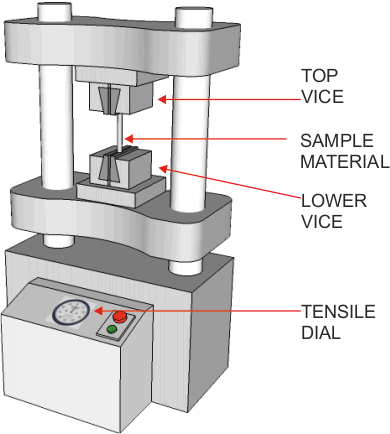
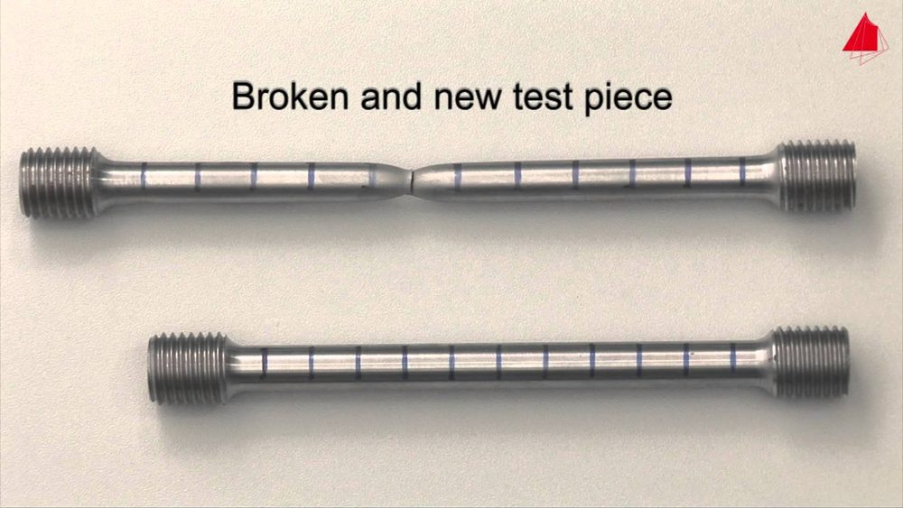

Every structure is only as good as the material it is made from. A frame can be perfectly designed, but if one member stretches too far, cracks, corrodes or snaps, the load it carried passes to the members around it and the whole structure can fail. Engineers therefore need to know how a material will behave before it is used: how strong it is, how much it will stretch, whether it will spring back, and how much of a margin to leave for the things they cannot predict. At Higher you will learn how that information is found by testing, how it is read from graphs and data tables, and how it is used in calculations to choose a material and size a member safely.
Section 1: Properties of Materials
The course specification lists six properties that you must be able to explain, recognise on a graph and use when choosing a material. Some of them come in opposite pairs, so learn them together.
| Property | What it means | Example |
|---|---|---|
| Strength | The ability to resist a force without breaking. A material can be strong in tension (being pulled), in compression (being squashed), or both. | Mild steel is strong in tension and compression; concrete is strong only in compression. |
| Elasticity | The ability to return to its original shape and size when the load is removed. The energy stored while it is stretched is given back. | Rubber, spring steel, a climbing rope |
| Plasticity | The ability to be permanently deformed without breaking: it keeps its new shape when the load is removed. The energy used is absorbed, not given back. | Clay, plasticine, a car crumple zone |
| Ductility | The ability to be stretched a long way in tension without breaking, for example drawn out into a thin wire. | Copper (electrical wire), mild steel |
| Brittleness | Breaking suddenly, with little or no plastic deformation and no warning. The opposite of ductility. | Glass, cast iron, concrete |
| Malleability | The ability to be shaped by hammering, pressing or rolling (compressive forming) without cracking. | Gold leaf, lead flashing, aluminium sheet |
Strength in tension and in compression
The properties of materials table in the data booklet gives an ultimate tensile stress and an ultimate compressive stress for each material, and they are not always the same. Look at three examples:
- Mild steel: 430 Nmm−2 in both tension and compression, so it can be used for ties and struts.
- Cast iron: 120–160 Nmm−2 in tension but 600–900 Nmm−2 in compression. It suits machine bases and columns that are squashed, not members that are pulled.
- Concrete: no tensile value is given at all, only 60 Nmm−2 in compression. Concrete cracks under very small tensile stresses, so beams and slabs are reinforced with steel bars placed where the tension is. The steel carries the tension and the concrete carries the compression, which is why reinforced concrete can be given a Young’s modulus and a higher compressive stress in the table.
Natural materials vary. Wood is much stronger along the grain than across it, and every piece is different because of knots and defects. That uncertainty is one reason engineers apply a larger factor of safety to wood (Section 7).
Section 2: Tensile Testing and Load–Extension Graphs
Values in the data booklet come from testing. The most common test is the tensile test. A specimen of the material is clamped in a machine called a tensometer and pulled apart, slowly and steadily, while the load and the extension are measured until the specimen breaks. The results are plotted on a load–extension graph.


Test pieces are made to a standard shape and size, with thicker ends for gripping and a narrower middle section of known gauge length and cross-sectional area. Using standard specimens means results from different laboratories, and different materials, can be compared fairly.
Reading a load–extension graph
| Point or region | What is happening |
|---|---|
| O to A: elastic region | The graph is a straight line: extension is directly proportional to load. If the load is removed, the specimen returns to its original length. |
| A: limit of proportionality / elastic limit | The end of the straight line. Beyond this the material no longer behaves elastically. |
| B: yield point | The material starts to stretch permanently: it “yields”. Beyond this the extension increases rapidly for little extra load. |
| B to D: plastic region | Any extension here is permanent. The material will not return to its original length when the load is removed. |
| C: ultimate tensile load | The highest point on the graph: the maximum load the specimen can carry. In a stress–strain graph this is the ultimate tensile stress (UTS). |
| C to D: necking | The cross-section narrows in one place (a “neck”), so the load it can carry falls while it keeps stretching. |
| D: fracture (breaking point) | The specimen breaks. |
Removing the load: elastic or plastic?
What happens when the load is taken off depends on where the specimen has reached on the graph.
- If the load is removed while the specimen is still in the elastic region, it goes back down the same straight line and returns to its original length.
- If the load is removed after the yield point, from a point such as P in the plastic region, it springs back a little along a line parallel to the elastic line, but it does not reach zero. The extension that is left is the permanent set: the specimen is now permanently longer.
Try it below. Pick a material, drag the slider to load the specimen, then press Remove the load. Use Zoom in on the start to see the elastic region: for metals it is so short compared with the plastic region that it is almost vertical on the whole-test view, which is why exam graphs are often drawn with a stretched-out strain axis.
Sketching graphs for other materials
You may be asked to sketch, on the same axes, a graph for a material with different properties. Two common ones:
- A more brittle material: a straight line with little or no plastic region before it ends suddenly at fracture (like glass or cast iron).
- A material with a lower Young’s modulus (less stiff): a straight line from the origin with a lower gradient. (A stiffer material has a steeper line.) You will meet this in Section 5.
A metal specimen was tested in a tensometer. The results are shown below.
Section 3: Stress and Strain at Higher
At National 5 you calculated stress and strain. Higher questions use exactly the same formulae, but the numbers are rarely handed to you directly: you will usually have to work out the cross-sectional area first, convert units, or rearrange the formula.
- Stress (σ) is the force per unit area inside a member. With force in N and area in mm2, stress is in Nmm−2, which is the unit used in the data booklet table. (1 Nmm−2 = 1 MNm−2 = 1 MPa.)
- Strain (ε) is the change in length divided by the original length. Both lengths must be in the same unit; they cancel, so strain has no unit. Strains are small, so they are often written in standard form, e.g. 0.00045 = 0.45 × 10−3 = 4.5 × 10−4.
- A tensile load makes a member longer; a compressive load makes it shorter. The formulae are the same for both.
Finding the cross-sectional area
The area is the area of the cross-section: the face you would see if you cut straight across the member. For a hollow member, subtract the hole.
A tubular leg of a stage platform has an outside diameter of 42 mm and an inside diameter of 34 mm. It carries a compressive load of 12 kN. Calculate the stress in the leg.
A tube with an inside diameter of 40 mm must carry a compressive force of 9.0 kN, and the stress in it must be 12 Nmm−2. Calculate the wall thickness.
A 4.5 m steel hanger is allowed a strain of 0.65 × 10−3. Calculate the change in length.
Section 4: Stress–Strain Graphs
A load–extension graph describes one particular specimen: a thicker specimen of the same material would carry more load, and a longer one would stretch further. Dividing every load by the cross-sectional area (to get stress) and every extension by the original length (to get strain) removes the effect of the specimen’s size. The result, a stress–strain graph, has the same shape but describes the material itself, so engineers can compare materials and use the values directly in design.
- Yield stress (σy): the stress at the yield point, the end of the elastic region. It is the greatest stress the material can take without being permanently deformed, and it is listed in the data booklet. Members in a structure are designed so that their working stress stays well below the yield stress, so they always behave elastically.
- Yield strain: the strain at the yield point, the greatest strain the material can take and still return to its original length.
- Ultimate tensile stress (UTS): the highest stress on the graph, the greatest stress the material can withstand before it starts to neck and fail. It is also in the data booklet, and it is used to calculate factor of safety.
- The gradient of the elastic line is Young’s modulus (Section 5).
Comparing materials on one graph
| To compare… | look at… | On the graph above |
|---|---|---|
| Strength | how high the graph goes (the UTS) | A is strongest, then B, C, D. |
| Stiffness | the gradient of the straight elastic line (steeper = stiffer) | A is stiffest; D is least stiff. |
| Elasticity | how much strain the material can take and still return: the length of the elastic region | C has the largest elastic strain. |
| Ductility / plasticity | the length of the plastic region before fracture | C and D are the most ductile. |
| Brittleness | little or no plastic region, then a sudden end | A is brittle; it fractures (✕) at the end of its straight line. |
So A behaves like glass or cast iron: strong and stiff but brittle. B is strong and stiff with a little ductility, like a high-strength alloy steel. C is a ductile metal such as mild steel or copper. D has low strength and stiffness but stretches a very long way, like many polymers.
Three materials, P, Q and R, were tested. Their stress–strain graphs are shown. (✕ marks fracture.)
Section 5: Young’s Modulus
In the elastic region of every stress–strain graph the line is straight, so stress is directly proportional to strain. The constant of proportionality, the gradient of that line, is called Young’s modulus or the modulus of elasticity, E.
- Strain has no unit, so E has the same unit as stress. Values for metals are very large, so the data booklet gives them in kNmm−2: 1 kNmm−2 = 1000 Nmm−2.
- E only applies in the elastic region. Never use it with a stress above the yield stress.
- E measures stiffness: how much a material resists being stretched or squashed. For the same stress, a material with a high E has a small strain. Mild steel (196 kNmm−2) stretches only about a third as much as aluminium alloy (70 kNmm−2) under the same stress, which is why an aluminium bike frame needs fatter tubes than a steel one to be equally stiff.
- E is a property of the material, not of the specimen: it is found in the data booklet, and a calculated value can be used to identify an unknown material.
Finding E from a graph
Choose any point on the straight elastic line that sits exactly on a grid intersection, read its stress and strain, and divide. Never use a point on the curved part of the graph, and read values carefully: the strain axis is often in × 10−3.
Calculate Young’s modulus for the material whose graph is shown.
A tie rod of diameter 8.0 mm and length 1.5 m stretches by 0.85 mm, within its elastic range, under a tensile load of 2.0 kN. Calculate Young’s modulus and identify the material.
Most Higher questions chain the formulae together. A common pattern is to find the change in length of a member: force and area give stress, the data booklet gives E, E gives strain, and strain gives change in length. Use Next to step through it.
A mild steel tie rod in a roof truss is 3.2 m long with a diameter of 12 mm. It carries a tensile force of 15 kN. Calculate its change in length.
Use the properties of materials table in the data booklet where you need it.
Section 6: Elastic Strain Energy
Work has to be done to stretch a material. In the elastic region that work is stored in the material as elastic strain energy, Es, and it is given back when the load is removed — the energy in a drawn bow, a stretched bungee cord or a wound spring. On a force–extension graph it is the area under the straight elastic line: a triangle.
F is the force and x is the extension in the direction of the force.
- With F in newtons and x in metres, Es is in joules. Extensions are usually given in mm, so divide by 1000 first.
- The formula is only valid in the elastic region, where the graph is a straight line from the origin. Beyond the yield point the area under the graph is not a triangle, and the energy used to deform the material plastically is not given back.
- Strain energy links the materials topic to energy and efficiency: it is just another energy store, like Ep or Ek.
A climbing rope behaves elastically and stretches by 18 mm under a tensile force of 400 N. Calculate the strain energy stored in it.
A steel cable stores 0.90 J of strain energy when it carries a tensile force of 12 kN. Calculate the extension of the cable.
Section 7: Factor of Safety
Why structures fail
Engineers can never be completely certain about every load a structure will meet or every flaw in its material. When a structure does fail, an investigation looks for the cause. The common causes are:
| Cause | What happens |
|---|---|
| Overloading | The loads are larger than the designer allowed for: misuse (too many people in a lift), a change of use since it was designed (heavier modern traffic on an old bridge), or extreme weather (snow, wind, flooding). |
| Dynamic and impact loads | Loads that move, vary or hit suddenly (traffic, wind gusts, waves, a dropped load) cause higher stresses than the same load applied gently. |
| Material faults | The material is not of consistent quality: hidden cracks or voids in a casting, or knots and splits in natural materials such as wood. |
| Deterioration and corrosion | The material weakens over time. Metals corrode (iron and steel rust; copper turns green), wood swells, warps and rots when it gets wet, and wear reduces the cross-section. |
| Joint failure | Poor welding, the wrong bolts, or bolts that were over- or under-tightened. Joints carry concentrated forces, so a small defect matters. |
| Fatigue | Repeated loading and unloading, even at stresses well below the yield stress, starts tiny cracks that grow with every cycle until the member suddenly fractures. Bend a paperclip back and forth to see it happen. |
What a factor of safety is
To allow for all of this, a structure is designed so that it could carry several times the load it will normally carry. The ratio of the load (or stress) that would cause failure to the load (or stress) the member is designed to carry is the factor of safety (FoS).
- The safe working load (SWL) is the greatest load the member or product is designed to carry in normal use. Lifting equipment, cranes and lifts are marked with their SWL.
- The safe working stress is the stress produced by the safe working load. It must always be well below the yield stress, so the member stays in its elastic region and is never permanently deformed.
- For the ultimate stress, use the data booklet: the ultimate tensile stress for a member in tension, and the ultimate compressive stress for a member in compression (a strut, a column, a piston rod pushing a load).
- A factor of safety has no unit.
Choosing the factor of safety
There is no single correct value. The engineer chooses the factor of safety from experience, codes of practice and a risk assessment, considering:
- the consequences of failure, especially the risk to people: a lift, a fairground ride or a road bridge needs a much higher factor than a garden shelf;
- the type of load: static loads are predictable; dynamic, impact and repeated loads (fatigue) need a higher factor;
- how accurately the loads are known and how thoroughly the design has been calculated and tested;
- the reliability of the material: manufactured metals are consistent; natural materials such as wood vary;
- the environment: exposure to weather, seawater or chemicals causes corrosion and wear over the life of the structure;
- the quality of manufacture and construction, and of maintenance and inspection.
A higher factor of safety is not automatically better. It means larger or stronger members, so more material, more cost, more weight (which itself adds load) and a bigger environmental impact. Aircraft use low factors of safety, around 1.5, because every kilogram matters — and they make up for it with very accurate calculation, extensive testing and frequent inspection. Lifting equipment that carries people may use 10 or more.
Calculating factor of safety
An aluminium alloy tie of diameter 20 mm carries a safe working load of 9.0 kN in tension. Calculate the factor of safety.
The mild steel piston rod of a pneumatic cylinder pushes a load with a force of 30 kN. A factor of safety of 8 is required. Calculate the minimum diameter of the rod.
Bolts that are already tightened
When a bolt is tightened, it is stretched and already carries a tensile stress before any load is applied. The load can only add the remaining stress up to the safe working stress.
A bracket is held by mild steel bolts. Each bolt is tightened to a stress of 8.0 Nmm−2, and then carries a tensile load of 6.0 kN. A factor of safety of 4.0 is required. Calculate the diameter of each bolt.
Use the properties of materials table in the data booklet. Decide first whether each member is in tension or compression.
Section 8: Strain Gauges
Tensile tests are done on specimens in a laboratory. To measure the strain in a real member while it is working — a bridge cable, an aircraft wing, the arm of a crane — engineers bond a strain gauge to its surface.
- A strain gauge is a very thin metal foil track, folded back and forth in a zig-zag, on a flexible plastic backing. It is glued firmly to the member, lined up with the direction of the strain to be measured, so it stretches and squashes exactly as the surface does.
- In tension the foil tracks become longer and thinner, so the gauge’s resistance increases. In compression they become shorter and fatter, so its resistance decreases.
- The change is tiny: a typical gauge of 120 Ω may change by less than 1 Ω. The signal must therefore be amplified, usually with a difference amplifier.
- From the strain, engineers can find the stress (σ = Eε) and so the load (F = σA). This is how load cells in weighing scales, crane overload alarms and bridge-monitoring systems work.
Active and passive gauges
The resistance of the foil also changes with temperature, and the member itself expands and contracts as it warms and cools. On its own, a single gauge cannot tell the difference between strain caused by the load and a change caused by temperature.
The solution is a second, identical gauge. The active gauge is bonded where the load strains the member. The passive (or dummy) gauge is mounted close by, on the same material at the same temperature, but where it is not strained by the load — for example on an unloaded piece of the same material, or at right angles to the strain. Each gauge goes in its own voltage divider. A temperature change affects both gauges equally, so the two divider voltages change together and their difference does not change. Only the strain from the load changes the difference. The passive gauge acts as a reference for the active gauge.
The difference amplifier amplifies only the difference between its inputs: Vout = RfRi(V2 − V1). You met this circuit in the Higher Analogue Electronics notes. A comparator can be used instead where an on/off signal is needed, such as an overload alarm.
In the circuit above, both gauges are 120 Ω when unstrained, Rf = 330 kΩ and Ri = 1.0 kΩ. Under load, the active gauge rises to 121.2 Ω. Calculate Vout. (Notice the difference between V2 and V1 is less than 5 mV: that is why it must be amplified.)
Section 9: Exam-Style Questions
These questions are set out like Higher exam questions, with the marks shown. Show all your working, use the data booklet, and give final answers to 2 significant figures with units.
Question 1 — Testing a material for a ferry gangway
A sample of a material proposed for a new ferry gangway at Oban was tested in a laboratory. The stress–strain graph is shown.
Question 2 — Canal lock gate hoist
A hoist is used to lift a lock gate on the Caledonian Canal during maintenance. The gate is lifted at a steady speed by a mild steel wire rope with a diameter of 12 mm. The tension in the rope is 7.5 kN, and the length of rope between the hoist drum and the gate is 18 m.
Question 3 — Distillery malt hopper
A malt hopper in a Speyside distillery stands on four legs made from mild steel square hollow section, 60 mm × 60 mm on the outside with a wall thickness of 4.0 mm. Each leg is 2.5 m long. When full, the hopper and malt have a total mass of 6400 kg, shared equally between the four legs.
Section 10: Extension: Design Challenges
Challenge 1 — Highland zip wire
An adventure centre near Fort William is building a 250 m zip wire across a gorge. You have been asked to specify the cable.
| i | The greatest tension in the cable, including the effect of a rider braking at the end, is 1.6 kN. |
|---|---|
| ii | A factor of safety of at least 10 is required, because riders’ lives depend on the cable. |
| iii | The cable must not stretch by more than 200 mm under the greatest tension. |
| iv | The cable will be outdoors all year in wet weather. |
Challenge 2 — Build your own tensile test
A tensometer is expensive, but the principle is simple. Design and carry out a tensile test that compares two everyday materials, such as strips cut from two different plastic bags, elastic bands, or lengths of fishing line.
| i | Test specimens must be the same shape and size for a fair comparison. |
|---|---|
| ii | Load must be added in equal steps, and the extension measured at each step, until the specimen breaks. |
| iii | Results must be plotted as a load–extension graph for each material on the same axes. |
| iv | The test must be safe: protect eyes and feet from a specimen snapping and masses falling. |
Challenge 3 — Harbour crane overload alarm
A small jib crane on the pier at Ullapool lifts creels and boxes of catch from fishing boats. Its jib is held up by a mild steel tie bar. The harbour wants the tie bar sized correctly and an alarm that sounds if the crane is overloaded.
| i | At the crane’s safe working load, the tension in the tie bar is 24 kN. |
|---|---|
| ii | The tie bar must have a factor of safety of at least 6. |
| iii | An active and a passive strain gauge (each 120 Ω unstrained) are bonded to the tie bar. The active gauge’s resistance rises by 0.20 Ω for every 1.0 × 10−4 of strain. |
| iv | An alarm must sound when the tension reaches the safe working load. The gauges are in the circuit from Section 8 (5.0 V supply, 1.0 kΩ resistors, difference amplifier with a gain of 330). |